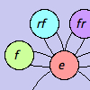
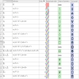
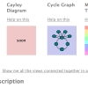

Features
Here are some of the most important things not to miss about how Group Explorer makes group theory more accessible and intuitive.
|
|

|
Each picture of a group is very interactive. Study properties of the group by reorganizing a diagram or highlighting it in different ways. Save useful views as images to use in a report or on a web page. |
|  |
Group Explorer comes with a vast library of groups, the main window that loads when you open the software. This is very hand for learning by example, for testing conjectures, and getting one's hands dirty in the real subject matter of group theory. Each group in the library, when double-clicked opens a group info window, full of useful information about the group. |
|  |
Many portions of the software contain links to useful explanations. Not only is the help system very robust, but group info windows contain many links, some within themselves, others to the help documentation, and others which dynamically generate illustrations for you! Furthermore, each visualizer has a help button to take you directly to the help for that visualizer. |
 |
You need not be content with examining groups in isolation. Sheets are a very important new concept in this version of Group Explorer, enabling you to create homomorphisms between groups, see complex diagrams like subgroup lattices, and more. |
|